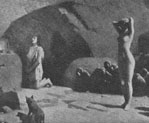

呂清夫 撰文

一、審美的與革命的藝評家是什麼樣的人種呢？是花籃文章的聖手？抑或是嫉惡如仇的劍客？他們的態度會主觀拔扈嗎？他們的文章會倒人胃口嗎？他們是否都有自己的所信、所望、所愛？他們之中是否也有一些今人知之恨晚的人物？那麼，讓我們先從「品質好、牌子老」的里德開始談起。嚴格地說，里德並不是屬於當代的，因為里德早在一九六八年即已仙逝，同時生前即已受到當代美國最具代表性的藝評家羅森堡（H.Rosenberg）的批判，里德之所以受到批判，乃是因為他一方面堅持「審美的」原則，一方面又擺出「革命的」姿勢，而羅森堡則認為「審美的」與「革命的」是彼此矛盾的，兩者擺在一起更是十分滑稽，他曾單刀直入地指出，里德談及六親不認的達達主義的時候，會忘記所謂的「革命的「態度，慨嘆達達主義，否定了「審美的」原則。但是羅森堡則認為達達與審美原則本來就風馬牛不相及，不如說達達的此一否定，才具有真正的革命性。因此他曾給達達主義以極高的評價，並認為因有達達在先，當代藝術才得受到承認（見The tradition of the new）。我們可以說，如果里德的立足點是「審美的」，那麼羅森堡毋寧是「革命的」，這兩人的態度剛好給與近代藝術與當代藝術劃出了鴻溝。也因此，吾人如以近代的審美原則去看當代的作品便容易文不對題。羅森堡甚至認為，反近代、反藝術的達達主義乃是整個當代藝術的源泉，所以當代藝術會顯得那麼不可理喻，那麼脫離常識，當普普剛出現的時候，有些資深的畫家還說，那簡直是在開玩笑，關於此事，在此姑且打住，讓我們回頭看看里德，不消說，里德的著作在國內有極多的譯本，唯一可惜的是，其他當代藝評家的著作（翻譯）卻如鳳毛麟角，這種「定於一尊」的局面不能不說是一個十分奇特的現象。 二、托爾斯泰論繪畫為避免重複起見，本文對於里德僅從國內對他的「遺珠」部份來作個分析。那麼讓我們先聽聽他如何和托爾斯泰去磨嘴皮，進而看看他對寫實繪畫的看法。在繪畫的觀點上而言，里德很不同意托爾斯泰的看法，為此曾提出長篇累牘的辯正，有一次他還引用托爾斯泰在「藝術論」中提到的兩幅畫來展開他的論點。那兩幅畫中有一幅畫是下跪的聖安東尼（見左上圖），聖人背後站著一個裸女及一群野獸，可以說是在平俗地表達一種臨色不亂的意念。但托爾斯泰則認為畫家太過喜歡那個裸女，對於聖人反而投閒置散，因此他說，這幅畫雖是藝術，卻是屬於醜陋的藝術。另一幅畫描寫一個主婦把一個小乞丐接到家�堥茠滷●滿]見右上圖），其中托爾斯泰曾把畫中人作這樣的描寫：小乞丐可憐地把赤腳縮到椅子後面靜靜地吃東西，主婦則注視看他，留心他是否還要吃點什麼別的，至於主婦旁邊的小女孩也在仔細地端祥著小乞丐，似乎生平第一次體會到什麼叫貧窮？人間的不平等又是什麼？為什麼自己樣樣都有，而這個小朋友卻沒得吃沒得穿？小女孩既同情他又喜歡他，在藝術家來說，他不但喜歡那個小女孩，也喜歡小女孩所喜歡的人……。於是托爾斯泰乃斷定，這雖然是一幅無名畫家的作品，卻是傑出的真正藝術品。 三、美是善的入口面對著托爾斯泰「藝術論」中的這番話，里德說，他並不是有意取笑別人，而是覺得，這番話可以顯示出寫實主義的感傷性。他說藝術的目的如果是在表現「真實」，那麼畫家讚美裸女與同情乞丐的感情應該具有同樣的真實性，但托爾斯泰在比較這兩幅畫的時候卻不使用審美的標準，而是使用道德的標準，所以讚美裸女是惡的，同情乞丐則是善的，亦即使用道德標準去攻擊具有審美感性的作品，當然，托爾斯泰的最終目的是想透過藝術作品來改善社會。對於托爾斯泰的這種理想，里德認為是可以贊同的，但是有一點使他期期以為不可，那就是這種做法很可能扼殺了藝術的根。他說藝術與道德是兩回事，道德以情操為基礎，藝術以感情為基礎，道德要努力壓抑感情，藝術則要拚命使之外鑠，故兩者是彼此相剋的，道德可以隨著時代或經濟的改變而改變，如貞潔、憐憫未必永遠是美德，藝術則是萬古常新的，舊時器時代的繪畫、希臘的悲劇、中世紀的伽藍無不超越時空，永為人類的精神瑰寶。他進一步指出，藝術可以改變社會的結構，但必須在藝術的審美範疇內才能實現。他認為改善社會道德的唯一方法是，先提高藝術水準，人類必先有雅致的習性，才會懂得什麼是美德，行為的美、環境的美、或者乾脆說是美的創造體驗將會提昇人的氣質，導人格於至善。他說這種信念或許和托爾斯泰的信念一樣，都太過天真，太不實際，但兩者比起來，還是有其根本的差異。他說托爾斯泰及其同路人往往都要從抽象的說教去改變人性及社會，但是他秉承柏拉圖的遺緒，主張從實踐的活動、諸如幾何學的測量（包括某種繪畫）、韻律性的運動（包括舞蹈）去著手，當人類的身心習慣性地吻合了上面的審美條件以後，便能夠自然地變化氣質，臻於善道，這正是柏拉圖所說的，美是善的入口。里德並認為，這條路線應比托爾斯泰更為實際才對。只是這個路線都沒有人去想過，去試過，在近代史上，人類無不事先高揭一個宗教的、乃至政治的理想，然後硬朝著那個理想，極力想建造一個新的社會，這種嘗試最後常使社會落入暴虐、不公、犯罪、苦惱的窠臼。因之，他希望大家注意，造形美才是道德美的真正基礎。 四、藝術走向群眾的贊否兩極托爾斯泰由於堅持道德的標準，所以對他來說，醜陋的藝術還很多，像貝多芬的第九交響曲他便認為惡劣無比，他對和聲法、對位法發明以來的整個音樂藝術發展過程無不攻擊得體無完膚。同樣地，他對近代藝術、近代文學、乃至他自己的作品也都惡顏相向。其最大的原因是他認為近代藝術乃是一種不自然的藝術、是一種所謂有教養的人的專利，所以藝術越精鍊、越複雜便脫離民眾越來越遠，而托爾斯泰認為藝術是萬民的公器，務必為萬民所理解才行。所以就造形藝術而言，托爾斯泰除了某種的風俗畫、動物畫、磁器玩偶以外，無不大肆攻擊。但是里德對於這種藝術走向群眾的看法無法同意，他說文學所欲表現的看法乃是造物者手下最複雜的實體，我們如要了解或評價這種複雜的實體，便需要精鍊而複雜的手段，像托爾斯泰所攻擊的莎翁名著「哈姆雷特」即其一例，如欲表現哈姆雷特的複雜性格，便自然需要較多的、較微妙的意象，而這些手法照理應使讀者更覺有趣才對，同樣的，梵谷、塞尚、荀貝克、史特拉汶斯基等近代藝術家為看描寫人性的基本特質，便不得不運用精鍊而複雜的感性。可是一般民眾在開始時對這些藝術往往嗤之以鼻，聽都不聽一下，看都不看一眼，這究竟是藝術的錯？還是民眾的錯？里德說，誰都沒有錯，錯的是近代文明本身，因為人類的文明常會製造許許多多的社會階級，這些階級即使在托爾斯泰所欣賞的藝術作品之發生地，如古希臘、古印度都存在著，而各種階級很自然地會出現各種複雜的感性，這使得一些複雜的藝術難以走向群眾，其唯一的解決之道，只在於社會結構的改變，社會結構一天不變，那種鴻溝便永遠存在著。里德認為，藝術與群眾的分離正是近代文明的特性之一，所以「高蹈」（highbrow）與「低俗」（lowbrow）的用詞時有所聞。他說，基於此，BBC廣播電台的節目乃不得不依所謂的教養水準而編為三級，三級之間毫無溝通，也無法溝通，真是無可奈何，這毋寧是近代文明的悲哀（以上見h. read: The grass roots of art） 。 五、如何為藝術殺出一條血路社會結構不但關係著看藝術與群眾的鴻溝，也關係著美及藝術價值的存亡。因為工業的生產曾使手工藝宣告凋零，相機的出現更使寫實的畫家步入異途。這種工業與藝術的矛盾、現實與理想的異歧、頭與手的失調，均使近代文明變得畸形。里德認為，所以造成此一局面，完全是機器惹的禍。為此他曾下功夫去研究「機械時代的藝術能夠活命嗎？」、「機器能夠創造美嗎？」等問題，最後他所得到的答案是肯定的。不過就方法而言，他認為大家不應再炒文藝復興的冷飯，不應再用機器生產去模仿手工的產品，藝術的問題不應停留在意識的範疇，應該擴展到廣大的潛意識世界。過去的寫實主義者雖在現象中去掌握「真實」，但是現代人如果不能把潛意識的領域視為「真實」的重要部份，便無以言藝術的現在與未來。這種機械時代的藝術一方面是捨棄外在描寫的寫實性，使藝術根本性格所在的抽象性更為濃厚，一方面是投入工業世界，以求審美價值的活路，例如機械生產中的流線形之美即屬之。基於此，里德乃成了立體主義、超現實主義等近代藝術的代辯者，也成了包浩斯運動的擁護者，因為這兩者不但關係著藝術的問題，也關係著社會的問題（見Art and industry）。